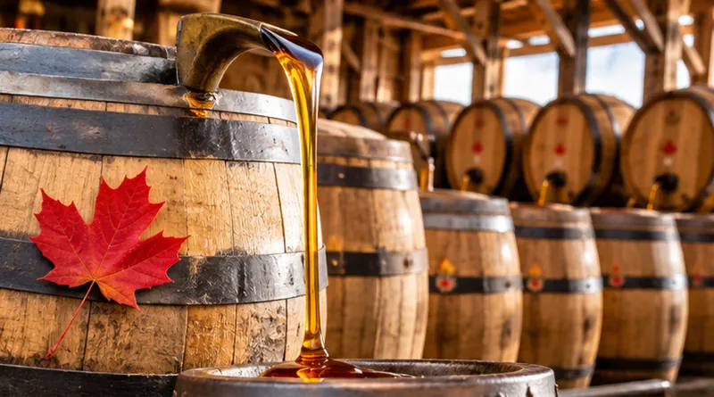

← Blog · History
🤯 25 Canadian facts that sound fake, but are true
Every one of these is true and checked. Read the fact, then try the question under it before you open the answer. There is a 10-question quiz at the end.
Last checked 25 October 2026
Symbols and holidays
1. Canada's flag is younger than Disneyland
Disneyland opened in California in July 1955. Canada's red and white maple leaf flag was raised for the first time almost ten years later, on February 15, 1965. Before that, Canadians used the Red Ensign and the British Union Jack.
🤔 Can you answer this? What is celebrated in Canada every February 15?
Answer: National Flag of Canada Day.
Read more: The story of the Canadian flag
2. O Canada only became the official anthem in 1980
O Canada was first sung in French in Quebec City on June 24, 1880. It was popular for a hundred years, but it only became Canada's official national anthem by law on July 1, 1980.
🤔 Can you answer this? Who wrote the music of O Canada?
Answer: Calixa Lavallée. The first words were written in French by Adolphe-Basile Routhier.
Read more: Canadian symbols explained
3. Canada Day was called Dominion Day until 1982
For more than a hundred years, July 1 was Dominion Day. Parliament changed the name to Canada Day in October 1982.
🤔 Can you answer this? What happened on July 1, 1867?
Answer: Confederation: Ontario, Quebec, Nova Scotia and New Brunswick joined to form Canada.
Read more: The history of Canada Day
4. Canada has two national sports, by law
A law passed in 1994, the National Sports of Canada Act, made hockey Canada's national winter sport and lacrosse its national summer sport.
🤔 Can you answer this? Which of the two was first played by Indigenous peoples, long before Europeans arrived?
Answer: Lacrosse.
Read more: Hockey in Canada
5. Santa Claus has a Canadian postal code
Letters to Santa at the North Pole, H0H 0H0, are delivered by Canada Post, and volunteers write back to children every year. The code reads like Santa's laugh: "Ho ho ho".
🤔 Can you answer this? What does the first letter of a Canadian postal code tell you?
Answer: The province or region. Codes starting with H, for example, are normally in Montreal.
Read more: Canadian holidays explained
Inventions, food and famous names
6. Winnie-the-Pooh was named after a real bear from Canada
In 1914 Harry Colebourn, a soldier and animal doctor from Winnipeg, bought a black bear cub in White River, Ontario, and named her Winnipeg. She ended up at the London Zoo, where a boy named Christopher Robin Milne loved her, and his father wrote the Pooh books.
🤔 Can you answer this? Winnie was named after which Canadian city?
Answer: Winnipeg, Manitoba.
Read more: Winnie, the bear from Winnipeg
7. Hawaiian pizza was invented in Ontario
Pineapple on pizza did not come from Hawaii. Sam Panopoulos, who owned a restaurant in Chatham, Ontario, first put it on a pizza in 1962. He named it after the brand of the canned pineapple.
🤔 Can you answer this? Which famous Canadian dish is made of fries, cheese curds and gravy?
Answer: Poutine, from Quebec.
Read more: Canadian food: poutine, maple syrup and more
8. A Canadian invented basketball, with peach baskets
James Naismith, from Almonte, Ontario, invented basketball in December 1891 at a school in Springfield, Massachusetts. The first hoops were two peach baskets, and someone had to climb up to get the ball out after every basket.
🤔 Can you answer this? How many rules did Naismith first write?
Answer: Thirteen.
Read more: A Canadian invented basketball
9. Insulin's discoverers sold the patent for $1
Insulin, which keeps millions of people with diabetes alive, was discovered at the University of Toronto in 1921 and 1922. Frederick Banting, Charles Best and James Collip sold the patent to the university for one dollar each, so the medicine could reach everyone.
🤔 Can you answer this? Which disease does insulin treat?
Answer: Diabetes.
Read more: Insulin, discovered in Canada
10. Superman was co-created by a man born in Toronto
Joe Shuster, who drew Superman, was born in Toronto in 1914 and lived there until he was nine or ten. He said the city of Metropolis was partly inspired by Toronto, and Clark Kent's newspaper was first called the Daily Star, like the Toronto Star.
🤔 Can you answer this? What is the newspaper called in the Superman stories today?
Answer: The Daily Planet.
Read more: Famous Canadians in history
Money
11. Canada stopped handing out pennies in 2013
A penny cost more than a cent to make, so the Royal Canadian Mint stopped sending them out in February 2013. Pennies can still be used, but when you pay cash, the total is rounded to the nearest 5 cents. Card payments are not rounded.
🤔 Can you answer this? You pay cash for something that costs $4.98. How much do you pay?
Answer: $5.00. Totals ending in 8 or 9 cents round up.
Read more: Canadian money explained
12. The loonie has a loon because the first design got lost
The new one-dollar coin was supposed to show a canoe with voyageurs. In 1986 the master dies, the tools to strike the coin, went missing on the way to the Mint's Winnipeg plant, so a design with a loon was used instead. The coin came out in 1987, and everyone called it the loonie.
🤔 Can you answer this? What is the $2 coin called, and when did it come out?
Answer: The toonie, in 1996.
Read more: Canadian money explained
13. Thieves stole about $18 million of maple syrup

Quebec keeps a reserve of maple syrup in barrels. In 2011 and 2012, thieves drained about 2,700 tonnes of it, worth about 18 million dollars, and refilled many barrels with water. The police caught them.
🤔 Can you answer this? Which province makes most of the world's maple syrup?
Answer: Quebec, by far.
Read more: Maple syrup and the great robbery
Animals and strange places
14. A town in Alberta built a landing pad for UFOs
For Canada's 100th birthday in 1967, the town of St. Paul, Alberta, built a landing pad for flying saucers, as a welcome to visitors from anywhere, even space. It is still there.
🤔 Can you answer this? How old was Canada in 1967?
Answer: 100 years old: its centennial.
Read more: The UFO landing pad in St. Paul
15. Churchill, Manitoba, has a "polar bear jail"
Polar bears walk right past the town of Churchill every fall. A bear that keeps coming into town can be held in a building everyone calls the polar bear jail, then moved far away, so it does not learn that towns mean food.
🤔 Can you answer this? Churchill sits on the shore of which huge bay?
Answer: Hudson Bay.
Read more: Churchill, polar bear capital
16. The world's longest beaver dam was found from space
In Wood Buffalo National Park, in northern Alberta, beavers built a dam about 850 metres long. Nobody knew until 2007, when a scientist spotted it on satellite pictures. No road goes near it.
🤔 Can you answer this? What is Canada's national animal?
Answer: The beaver.
Read more: The world's longest beaver dam
17. Canada and Denmark now share a land border
Hans Island is a tiny bare rock between Ellesmere Island and Greenland. For decades, Canadian and Danish visitors left their own flags there, and bottles of whisky or schnapps, a friendly quarrel nicknamed the Whisky War. In 2022 the two countries agreed to split the island in half.
🤔 Can you answer this? Before 2022, which was the only country with a land border with Canada?
Answer: The United States.
Read more: Map of Canada quiz
Geography
18. Walking Canada's coastline would take more than 30 years
Canada has the longest coastline in the world, about 243,000 kilometres counting all its islands. Walking 20 kilometres every single day, it would take about 33 years.
🤔 Can you answer this? Canada's coast touches how many oceans?
Answer: Three: the Pacific, the Atlantic and the Arctic.
Read more: Canada's geography, coast to coast to coast
19. The Bay of Fundy has the highest tides on Earth
Twice a day, the tide in the Bay of Fundy can rise and fall by up to 16 metres, about as high as a four-storey building. At low tide you can walk on the sea floor where boats float a few hours later.
🤔 Can you answer this? The Bay of Fundy lies between which two provinces?
Answer: New Brunswick and Nova Scotia.
Read more: Canada's geography, coast to coast to coast
20. Nunavut has the world's tallest straight-down cliff
Mount Thor, in Auyuittuq National Park on Baffin Island, has a cliff face that drops about 1,250 metres. Parks Canada calls it the world's tallest cliff face.
🤔 Can you answer this? Which territory became part of Canada's map in 1999?
Answer: Nunavut.
Read more: Nunavut facts
21. No road leads to one of Canada's capitals
Iqaluit, the capital of Nunavut, is not connected to the rest of Canada by any road. People arrive by plane, and most heavy supplies come by ship in the short summer.
🤔 Can you answer this? What is the name for the yearly summer ships that bring supplies to the North?
Answer: The sealift.
Read more: Nunavut facts
22. One time zone in Canada is off by half an hour
Newfoundland Time is half an hour ahead of Atlantic Time, so when it is noon in Halifax, it is 12:30 in St. John's. And most of Saskatchewan never changes its clocks in spring or fall.
🤔 Can you answer this? How many time zones does Canada have?
Answer: Six: Pacific, Mountain, Central, Eastern, Atlantic and Newfoundland.
Read more: Newfoundland and Labrador facts
23. The world's largest skating rink is a canal in Ottawa
Each winter, 7.8 kilometres of the Rideau Canal in Ottawa freeze into the Rideau Canal Skateway, named the world's largest naturally frozen skating rink. Some people skate to work.
🤔 Can you answer this? The Rideau Canal first opened in which year?
Answer: 1832.
Read more: Winter in Canada
24. The CN Tower was the world's tallest free-standing structure for 32 years
Toronto's CN Tower was finished in 1975 and opened to the public in 1976. At 553 metres, it was the tallest free-standing structure on Earth, and it kept that title until 2007.
🤔 Can you answer this? Which tower took the title in 2007?
Answer: The Burj Khalifa, in Dubai.
Read more: Ontario facts
25. Canada's first national park began with an argument over hot springs
In 1883 three railway workers found hot springs in a cave near Banff and tried to claim them. Others claimed them too. In 1885 the government stepped in and set aside the springs for everyone, the start of what became Banff National Park.
🤔 Can you answer this? Banff National Park is in which province?
Answer: Alberta.
Read more: Canada's national parks
Test yourself: ten questions
No timer. Every answer tells you why.
Keep going
Sources
- Canadian Heritage: the history of the National Flag of Canada
- Canadian Heritage: the national anthem
- Justice Laws: National Sports of Canada Act
- Canada Post: the Santa letter program
- Canada Revenue Agency: phasing out the penny and rounding
- Royal Canadian Mint: a tale of two designs, the loonie
- University of Toronto Magazine: the miracle of insulin
- The Canadian Encyclopedia: Hawaiian pizza
- The Canadian Encyclopedia: Joe Shuster
- Global Affairs Canada: the 2022 agreement with Denmark and Greenland
- Parks Canada: epic places in the North (Thor Peak)
- Parks Canada: Cave and Basin National Historic Site
- National Capital Commission: the Rideau Canal Skateway
- Guinness World Records: largest naturally frozen ice rink
This article is for general information and study. This site is unofficial and not affiliated with the Government of Canada. Every source used is listed above and on our sources page.